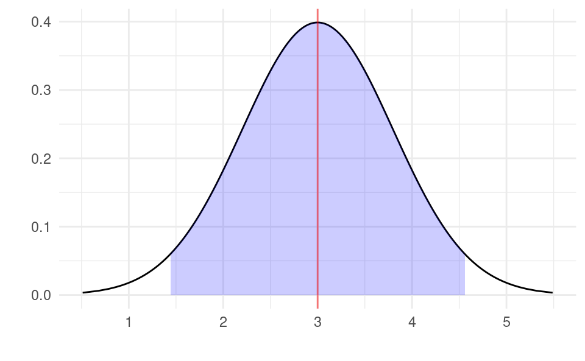
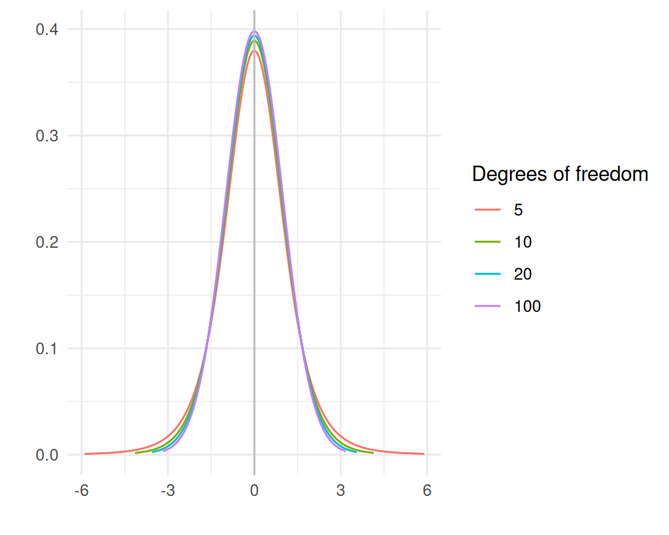
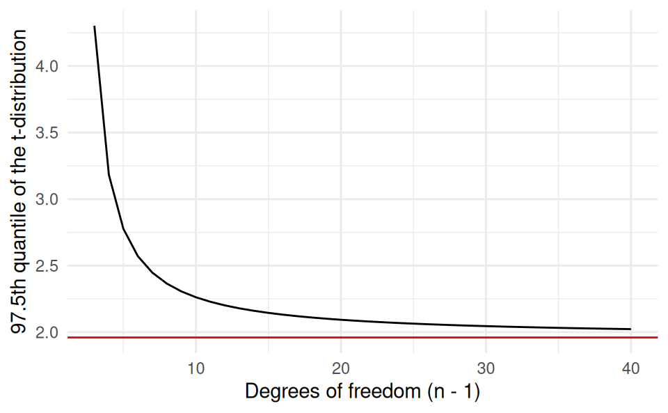
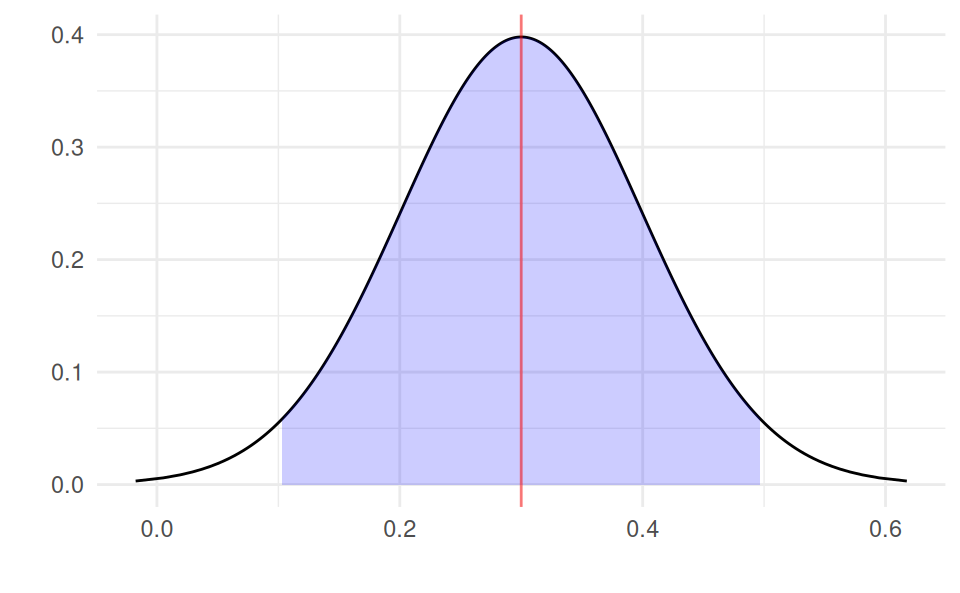

We will now learn how to estimate confidence intervals for our estimates b_0 and b_1. Before we do that, we will start by revising how to obtain a confidence interval for the sample mean that you learned in Statistics 1. We will then show the theory behind confidence intervals for the simple linear regression model, followed by how to compute them in R.
9.1 Confidence Interval for the Sample Mean
We first revise how to calculate a (1-\alpha)% confidence interval for the sample mean. We will consider the case where the variance of X is not known and needs to be estimated.
The steps are:
We estimate the sample mean with \bar{x}=\frac{1}{n}\sum_{i=1}^n x_i.
We estimate the sample variance with s^2=\frac{1}{n-1}\sum_{i=1}^n \left( x_i-\bar{x} \right)^2.
We compute the standard error of the mean using the formula \sqrt{\frac{s^2}{n}}.
We look for quantile 1-\frac{\alpha}{2} of the Student’s t distribution with n-1 degrees of freedom using software/tables. Call this number t_{1-\frac{\alpha}{2},n-1}.
We then calculate the confidence interval using the formula: \bar{x}\pm t_{1-\frac{\alpha}{2},n-1}\sqrt{\frac{s^2}{n}}
Let’s do a numeric example for a 95% confidence interval. Suppose you have n=400 observations from a random sample. You calculate the sample mean \bar{x}=3 and sample variance s_X=16 from this sample. With n=400 and \alpha=0.05, the quantile of the Student’s t distribution is t_{1-\frac{\alpha}{2},n-1}=1.96. t_{1-\frac{\alpha}{2},n-1}\times \frac{s_X}{\sqrt{n}}. Using the formula, the confidence interval is: 3\pm 1.96 \times \sqrt{\frac{16^2}{400}} Simplifying this gives 3\pm 1.57.
Another way to write the confidence interval is \left[ 1.43,4.57 \right], i.e. 3-1.57 and 3+1.57. What does the confidence interval tell us? It tells us that we are 95% confident that the population mean is between 1.43 and 4.57.
We can illustrate this graphically as follows. We draw the estimated sampling distribution around \bar{x} using the standard error \sqrt{\frac{16^2}{400}}. We can see that the distribution is centered around the sample mean of 3 (with the red line). The the 95% confidence interval is shaded in blue which contains 95% of the area under the curve. The area remaining to the left and right are each 2.5% of the total area. We can see that the left edge of the blue area is at 1.43 and the right edge is at 4.57, corresponding to the limits of the 95% confidence interval \left[ 1.43,4.57 \right] we calculated above.
Show code generating the plot below
library(ggplot2)df <-data.frame(x =3+ (16/sqrt(400))*qt(seq(0.001, 0.999, by =0.001), 399))df$y <-dt(qt(seq(0.001, 0.999, by =0.001), 399), 399)ci <-qt(0.975, 400-1) * (16/sqrt(400))df$fill <-ifelse(df$x >3- ci & df$x <3+ ci, df$x, NA)ggplot(df, aes(x, y)) +geom_line() +xlab("") +ylab("") +geom_area(aes(x = fill), fill ="blue", alpha =0.2) +geom_vline(xintercept =3, color ="red", alpha =0.5) +theme_minimal()

9.2 Who is the “Student” behind the t distribution?
Before discussing how to get confidence intervals for the simple linear regression model, let’s just take a quick aside to discuss why we call it the “Student’s” t distribution. The “student” is actually William Sealy Gosset (1876-1937), who was the head brewer at the Guinness brewery in Dublin. Gosset wanted to determine the quality of batches of hops by calculating the proportion of soft and hard resins in small samples. Based on these small samples, he wanted to make inference over the entire batch of hops. But because the samples were so small he could not use the normal distribution. Instead he had to come up with a different way to calculate confidence intervals. He figured out how to do this mathematically. Because this discovery was useful beyond brewing (and why we are learning it here) we wanted to publish his discovery. But in order to avoid publishing trade secrets, he published it under a boring title that Guinness’s competitors would never read and wrote about his work under the pseudonym, “Student”.
This is probably Ireland’s greatest contribution to statistics. Unfortunately when you visit the Guinness Brewery in Dublin there is only a tiny plaque stating this. They should definitely make a bigger deal of it!
Let’s take a look at the t distribution for different values of the degrees of freedom:
Show code generating the plot below
library(ggplot2)df <-do.call(rbind, lapply(c(5, 10, 20, 100), function(j) { out <-data.frame(x =qt(seq(0.001, 0.999, by =0.001), j), deg_freedom = j) out$y <-dt(qt(seq(0.001, 0.999, by =0.001), j), j)return(out)}))ggplot(df, aes(x, y, color =factor(deg_freedom))) +geom_line() +xlab("") +ylab("") +geom_vline(xintercept =0, color ="gray") +scale_color_discrete(name ="Degrees of freedom") +theme_minimal()

It has a mean of zero and is almost the same shape as the standard normal distribution. With small n the distribution is wider but as n grows large it converges to the standard normal distribution.
To see how different the quantiles of the t-distribution can be at small sample sizes, we plot the quantile t_{1-\frac{\alpha}{2},n-1} for \alpha=0.05 and n from 3 to 40. We can see that at very small n the quantile is very large. But as n gets larger it approaches the the familiar 1.96 of the normal distribution (shown in red).
Show code generating the plot below
library(ggplot2)df <-data.frame(n =3:40)df$t <-qt(0.975, df$n -1)ggplot(df, aes(n, t)) +geom_line() +xlab("Degrees of freedom (n - 1)") +ylab("97.5th quantile of the t-distribution") +geom_hline(yintercept =qnorm(0.975), color ="red") +theme_minimal()

9.3 The Standard Errors of the Regression Coefficients
9.3.1 Theory
Above we saw that the standard error of the sample mean was \sqrt{\frac{s^2}{n-1}}. To be able to form confidence intervals for the regression coefficients, we need the analog of this for the regression coefficients. To obtain these, we first need to get the sample variance of the estimated model, s_\varepsilon^2. The formula for this is:
s_\varepsilon^2 =\frac{\sum_{i=1}^n \left( y_i-\hat{y}_i \right)^2}{n-2}
=\frac{\sum_{i=1}^n e_i^2}{n-2}
The sum \sum_{i=1}^n e_i^2 is called the “sum of squared errors”, or SSE for short. We divide by n-2 instead of n-1 because we had to estimate two parameters (\beta_0 and \beta_1) to obtain the residuals e_i. When we estimate the sample variance, we only had to estimate one parameter (the sample mean), which is why we divided by n-1 in that case.
The standard errors for the intercept and slope are then found with the formulas:
s_{b_0} = \frac{\sum_{i=1}^n x_i^2}{n}\frac{s_\varepsilon}{\sqrt{\sum_{i=1}^n\left( x_i-\bar{x} \right)^2}} \qquad\qquad
s_{b_1} = \frac{s_\varepsilon}{\sqrt{\sum_{i=1}^n\left( x_i-\bar{x} \right)^2}}
Note: You don’t need to know the formula for s_{b_0} or s_{b_1} for the exam. We will always calculate these with R.
9.3.2 Standard Errors in R
Let’s see how to calculate these with R. The most straightforward way to do this is to use the summary() command with the estimated regression model. Let’s try it with the advertising and sales data:
df <-read.csv("advertising-sales.csv")m <-lm(sales ~ advertising, data = df)summary(m)
Call:
lm(formula = sales ~ advertising, data = df)
Residuals:
Min 1Q Median 3Q Max
-8.0546 -1.3071 0.1173 1.5961 7.1895
Coefficients:
Estimate Std. Error t value Pr(>|t|)
(Intercept) 4.243028 0.438525 9.676 <2e-16 ***
advertising 0.048688 0.001982 24.564 <2e-16 ***
---
Signif. codes: 0 '***' 0.001 '**' 0.01 '*' 0.05 '.' 0.1 ' ' 1
Residual standard error: 2.6 on 198 degrees of freedom
Multiple R-squared: 0.7529, Adjusted R-squared: 0.7517
F-statistic: 603.4 on 1 and 198 DF, p-value: < 2.2e-16
The standard error for the intercept is s_{b_0}=0.438525 and the standard error for the slope is s_{b_1}=0.001982.
The summary() command also gives lots of information about the regression. We will learn what all parts of the output means over the coming lectures. If we only want to see the coefficients table with the standard errors, we can do:
coef(summary(m))
Estimate Std. Error t value Pr(>|t|)
(Intercept) 4.24302822 0.438525138 9.675678 2.230651e-18
advertising 0.04868788 0.001982108 24.563691 5.059270e-62
This table is a matrix, which is an R object which is a rectangular array with each element having the same type. Here the array is 2\times 4 (2 rows and 4 columns).
class(coef(summary(m)))
[1] "matrix" "array"
This is different from a data.frame because in a data.frame columns could have different types (but all elements of each column had to have the same type and length).
To get the standard errors from this matrix, we can extract the column either by its index or its column name:
coef(summary(m))[, 2]
(Intercept) advertising
0.438525138 0.001982108
coef(summary(m))[, "Std. Error"]
(Intercept) advertising
0.438525138 0.001982108
To extract a single value we must also specify the row. We can do this either by its index or its row name. Suppose we want to get s_{b_1}. We can do either:
coef(summary(m))[2, 2]
[1] 0.001982108
or:
coef(summary(m))["advertising", "Std. Error"]
[1] 0.001982108
Of course the first option involves less typing. However, the second is much clearer what the code intends to do: we can read advertising and Std. Error and know that the number it produces will be the standard error on the advertising coefficient from our model. Therefore the second option is arguably better code.
9.4 Confidence Intervals for Regression Coefficients
9.4.1 Theory
The formula for the regression coefficient confidence intervals is very similar to the one for the sample mean. The formula for the confidence interval for the regression slope is:
b_1 \pm t_{1-\frac{\alpha}{2},n-2} \times s_{b_1}
Let’s compare this to the one for the sample mean we saw above:
\bar{x} \pm t_{1-\frac{\alpha}{2},n-1} \times \sqrt{\frac{s^2}{n}}
There are 3 differences:
We replaced the sample mean \bar{x} with the estimate of the regression slope b_1.
We use n-2 degrees of freedom instead of n-1 when obtaining the (1-\frac{\alpha}{2}) quantile of the Student’s t distribution.
We replaced the standard error of the sample mean \sqrt{\frac{s^2}{n}} with the standard error of the sample regression slope.
Therefore once we know what the standard error is, the formula is essentially the same in both cases: it is the estimate plus or minus the relevant quantile of the Student’s t distribution multiplied by the standard error. Only the degrees of freedom argument is different.
9.4.2 Numeric Example
Let’s do a numeric example with this formula. Suppose you have a sample with n=100 observations and want a 95% confidence interval for the regression slope. You estimate a slope of b_1=0.3 and get a standard error of s_{b_1}=0.1. We look up the quantile of the Student’s t distribution and obtain t_{1-\frac{\alpha}{2},n-2}=t_{0.975,98}=1.984. To get this quantile in R we can use the qt() function:
qt(0.975, 98)
[1] 1.984467
We then use the formula:
\begin{split}
b_1 &\pm t_{1-\frac{\alpha}{2},n-2}\times s_{b_1} \\
0.3 &\pm 1.984 \times 0.1 \\
0.3 &\pm 0.1984
\end{split}
The confidence interval is then \left[ 0.102,0.498 \right]. We are 95% confident that the population regression slope \beta_1 is between 0.102 and 0.498. The entire confidence interval is above zero so we are 95% confident that X has an effect on Y. That is, the confidence interval does not contain zero, so we are 95% confidence that \beta_1\neq 0.
Graphically the confidence interval is the width of the shaded blue area around the sample estimate at the red line:
Show code generating the plot below
library(ggplot2)df <-data.frame(x =0.3+0.1*qt(seq(0.001, 0.999, by =0.001), 98))df$y <-dt(qt(seq(0.001, 0.999, by =0.001), 98), 98)ci <-qt(0.975, 98) *0.1df$fill <-ifelse(df$x >0.3- ci & df$x <0.3+ ci, df$x, NA)ggplot(df, aes(x, y)) +geom_line() +xlab("") +ylab("") +geom_area(aes(x = fill), fill ="blue", alpha =0.2) +geom_vline(xintercept =0.3, color ="red", alpha =0.5) +theme_minimal()

The shaded blue area under the curve represents 95% of the total area. The white areas in the tails each make up 2.5% of the area.
9.4.3 Confidence Intervals in R
R has a built-in function to easily calculate confidence intervals called confint(). We can use it as follows to get a 95% confidence interval for both b_0 and b_1:
df <-read.csv("advertising-sales.csv")m <-lm(sales ~ advertising, data = df)confint(m, level =0.95)
We are 95% confident that the population intercept \beta_0 is between 3.3782 and 5.1078 and we are 95% confident that the population slope \beta_1 is between 0.0448 and 0.0526. The entire confidence interval for the slope is above zero so we are 95% confidence that advertising does have an effect on sales (i.e. \beta_1\neq0).
If we only want to get the confidence interval for the slope and not the intercept we can specify the parameter we want to get:
confint(m, parm ="advertising", level =0.95)
2.5 % 97.5 %
advertising 0.04477913 0.05259663
We could alternatively save the confidence interval to an object (let’s call it ci) and extract elements from it. Suppose I wanted to get just the lower bound of the confidence interval for the slope:
ci <-confint(m, level =0.95)ci[2, 1]
[1] 0.04477913
9.4.4 Manually Calculating Confidence Intervals in R
Finally, let’s check that using the mathematical formula for the confidence interval directly gives the same results as using confint().